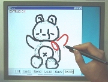

はじめての方はまず
ビデオクリップ (AVI, 32MB)
をご覧ください。(大きいので電話回線の方は無理かもしれません。)
Teddy の操作方法を順番に説明します。
このブラウザの画面とアプレットのウィンドウを
横にならべるようにして動かしてください。
プログラムはあくまでも研究上のプロトタイプですので
いろいろと不都合がありますのでご了承ください。
もしおかしくなったら Undo してください。
（現時点では２段階まで Undoできます。）
それでもだめになった場合にはブラウザのリロードボタンをおして
アプレットを再スタートさせてください。
まず基本的な操作方法を説明しておきます。